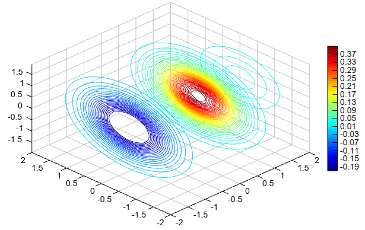

contourslice¶
- Axes3DGL.contourslice(*args, **kwargs):
Volume slice contours.
- Parameters
x – (array_like) Optional. X coordinate array.
y – (array_like) Optional. Y coordinate array.
z – (array_like) Optional. Z coordinate array.
data – (array_like) 3D data array.
xslice – (list) X slice locations.
yslice – (list) Y slice locations.
zslice – (list) Z slice locations.
cmap – (string) Color map string.
smooth – (bool) Smooth contour lines or not.
- Returns
Contour slice graphics
Example of
contoursliceX=Y=Z = arange(-2, 2.1, 0.2) X,Y,Z = meshgrid(X, Y, Z) V = X*exp(-X**2-Y**2-Z**2) xslice = [-1.2,0.8,2] yslice = [] zslice = [] levs = arange(-0.2, 0.4, 0.01) contourslice(X, Y, Z, V, levs, xslice=xslice, yslice=yslice, zslice=zslice) colorbar() xlim(-2, 2) ylim(-2, 2)
Vertical cross section contour slice with start and end x/y points
X=Y=Z = arange(-2, 2.1, 0.2) X,Y,Z = meshgrid(X, Y, Z) V = X*exp(-X**2-Y**2-Z**2) xslice = [0.8] levs = arange(-0.2, 0.4, 0.01) contourslice(X, Y, Z, V, levs, xslice=xslice, xyslice=[-2,-1,2,1]) colorbar() xlim(-2, 2) ylim(-2, 2)